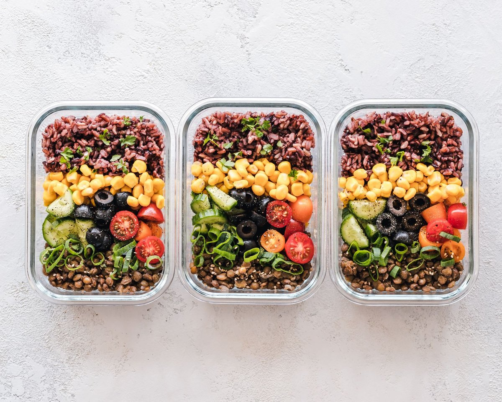
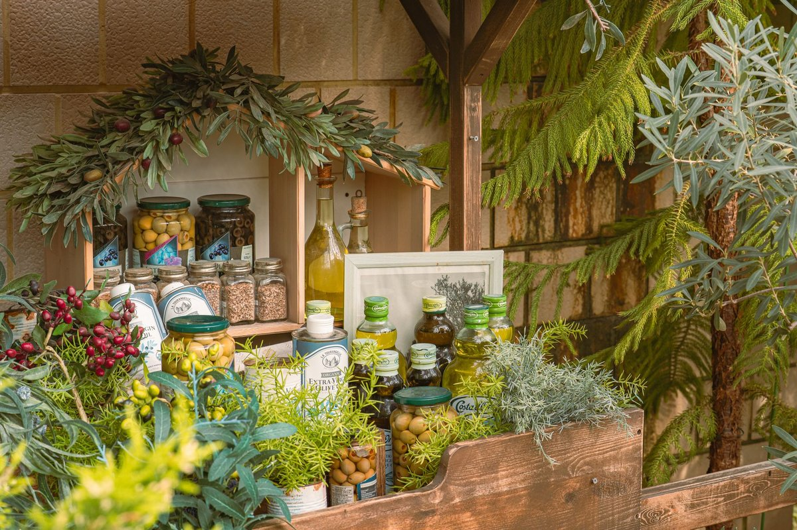

What Nobody Tells You About Budget Meal Prep

Key takeaways
- I used to sit on my kitchen floor on Sunday evenings surrounded by $180 worth of spoiled organic produce and plastic containers, completely overwhelmed.
- I thought caring for my family's health meant spending half our paycheck at high-end grocery chains and spe
- Track what feels sustainable and adjust gradually.
I used to sit on my kitchen floor on Sunday evenings surrounded by $180 worth of spoiled organic produce and plastic containers, completely overwhelmed. I thought caring for my family's health meant spending half our paycheck at high-end grocery chains and spending six straight hours chopping rainbow carrots.
It took a massive credit card statement and severe kitchen burnout for me to realize the truth: traditional meal prepping is broken. Real Budget Meal Prep isn't about picture-perfect aesthetic glass jars; it's about making low-cost healthy eating work for chaotic family schedules without sacrificing gut health.
The secret to feeding your family well on a shoestring budget is batching cheap foundations, not buying specialty health foods. When I shifted my strategy from complex recipes to simple, nutrient-dense staples like canned black beans, frozen spinach, and bulk brown rice, our grocery bill dropped by 40% overnight. You can start small by checking out this related healthy tip to streamline your shopping list.
To make cheap meals truly work for your digestion, consistency is crucial. When we switched to high-fiber budget meals, my family's stomachs needed extra support to adjust smoothly, which is why introducing a Daily Synbiotic Capsule into our morning routine was a complete game-changer for overall daily comfort.
Stop trying to prep whole meals for seven days at once. Cook three base ingredients in large amounts on Sunday: a roasted sheet pan of cabbage and sweet potatoes, a huge batch of lentils, and shredded chicken thighs. You can turn these into tacos, grain bowls, or soups in under ten minutes during busy weeknights. For more ideas on organizing your kitchen flow, review this another practical guide.
The 2-Minute Win
Audit your freezer right now. Take two minutes to list every frozen vegetable or protein you already own on a sticky note and slap it on your fridge door so you use what you have before buying more.
Keeping family digestion balanced during diet shifts doesn't require luxury supplements or pricey juices. For long-term gut comfort, I rely on a simple Daily Synbiotic Capsule alongside our affordable high-fiber dishes to keep everyone feeling light and energized. Take a look at this similar wellness insight to learn how fiber and probiotics work together.
Forget perfectionism in the kitchen. A ugly, five-dollar mess of beans, cabbage, and rice that actually gets eaten beats a seventy-dollar gourmet meal prep that rots in the fridge every single time.
When you focus on affordable pantry foundations, you free up both mental energy and cash. To keep your momentum going next week, make sure to stay consistent with this stress-free meal assembly approach.
Building sustainable, low-cost habits takes time and patience with yourself. Feel free to explore more gut guides as you continue transforming your home kitchen routine.
Educational only — not medical advice.
Disclosure: This page may contain affiliate links.
Recommended Reading
- Is Your Toddler Eating Ultra-Processed Foods? The Shocking Truth About Toddler Meals
- Busy Pro's Guide to Quick, Healthy Eating
- What Nobody Tells You About The Whole Grain Sweet Spot
More in gut

gutFix A Hidden Compound In Healthy Foods May Worsen Ibd Fast
Discover how a hidden compound in healthy foods may worsen Ibd and learn 4 practical ways to calm your gut naturally sta
Read article →3 Science-Backed Lessons: Sugary Drinks & Stomach Cancer Risk
Learn how one sugary drink a day linked to more than double the risk of stomach cancer, and explore 3 science-backed way
Read article →